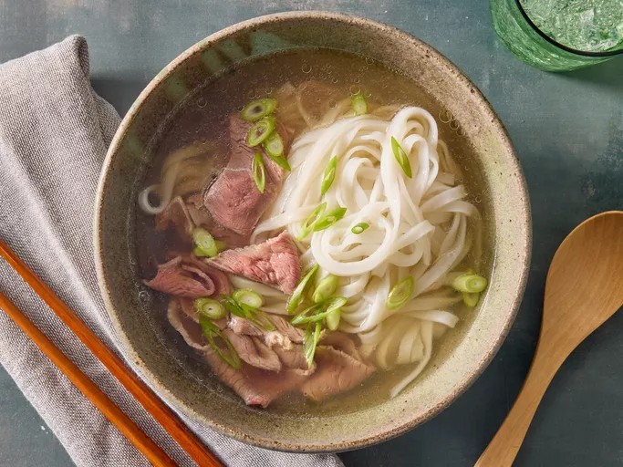

Beef Pho

Description
A take on southern Vietnamese pho, this is a comforting bowl of rich, spiced beef broth ladled over rice noodles and thinly sliced beef. Serve it with hoisin sauce, sriracha sauce, green onion, cilantro, bean sprouts, basil, and lime.
Ingredients
- Beef bones and tough beef cuts
- Flat rice noodles
- Aromatics
- Spices
- Daikon
- Salt, sugar, and fish sauce
- Steak
Cooking steps:
- Gather all ingredients
- Make broth
- Preheat the oven's broiler
- Place onions and unpeeled ginger onto the prepared roasting pan and cook under the preheated broiler
- Skim fat from surface of simmering broth
- Strain broth. Discard bones and bouquet garni
- Skim and discard fat from the top of chilled broth
- Boil noodles
- Ladle hot broth over sirloin and noodles
- Serve and enjoy
Back to recipes